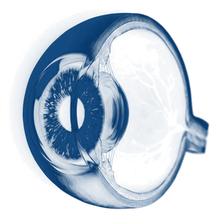
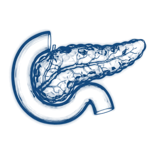
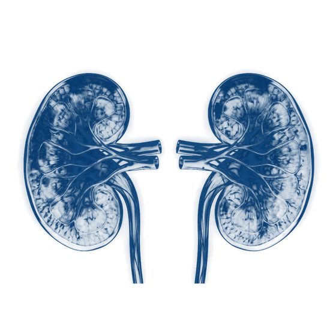
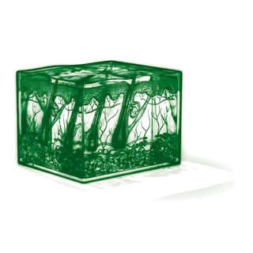
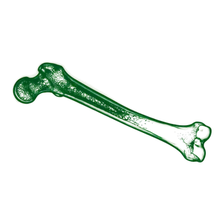

SHARE · Southern Philippines Medical Center
One referral can save up to eight lives.
Send SHARE your brain death referral the way you already write it. Our offline reader turns your Messenger text into a complete referral in seconds, so the coordinator on duty can act at once.
Automated transcription
Paste it the way you send it. The reader does the typing.
- Seconds, not minutes. Name, age, ward, GCS, diagnosis and brain death status are filled for you.
- Offline. No AI. Hard-coded Python reads the text inside your browser. Nothing is uploaded until you press Send.
- Clinical notes kept. Brainstem reflexes, NIHSS, CT and vital signs go to the coordinator in one note.
Messenger
Good evening doctors! Respectfully referring patient: NAME: SANTOS, PEDRO AGE/SEX: 57/M LOCATION: ER RED ZONE CURRENT WORKING IMPRESSION: ACUTE CVD BLEED, LEFT FRONTOTEMPORAL, ICH SCORE 4 NEURO PE: GCS 3, fixed dilated pupils, (-) corneal, (-) gag, (+) spontaneous breathing Intubated, on MV Will not proceed with BD yet.
Referral form
- Patient
- SANTOS, PEDRO
- Age / sex
- 57 · Male
- Ward
- ER RED ZONE
- Diagnosis
- Acute CVD bleed, left frontotemporal
- GCS
- 3
- Ventilator
- Yes
- Brain death
- Not yet
- Clinical notes
- Fixed dilated pupils; (-) corneal; (-) gag; (+) spontaneous breathing
8 fields filled. You check, then send.
A fully utilized donor
What one referral can become.
When a family says yes and every organ and tissue can be used, one donor can save up to eight people and help many more live better.
8
lives saved by organs75+
people helped by tissueFigures: U.S. Health Resources and Services Administration, organdonor.gov. Results depend on medical suitability and family consent.

Corneasrestore sight 2 lungsend-stage lung disease
2 lungsend-stage lung disease Heartend-stage heart failure
Heartend-stage heart failure Liverliver failure, cirrhosis
Liverliver failure, cirrhosis
Pancreastype 1 diabetes
2 kidneysoff dialysis- Intestineintestinal failure

Skinburn care
Bone and valvesrepair and surgery
How it works
From your referral to the recipients.
- 01
You refer
Paste or type the referral. Only your name, the patient and the hospital are required.
- 02
SHARE responds
The coordinator on duty gets the transcribed referral by email at once and reviews the case.
- 03
Evaluation and family
SHARE evaluates the patient with your team and approaches the family with care.
- 04
Lives continue
With consent, organs and tissue are recovered and matched to waiting patients.
It starts with your referral.
Thank you for thinking of SHARE. Every referral is reviewed by a coordinator.